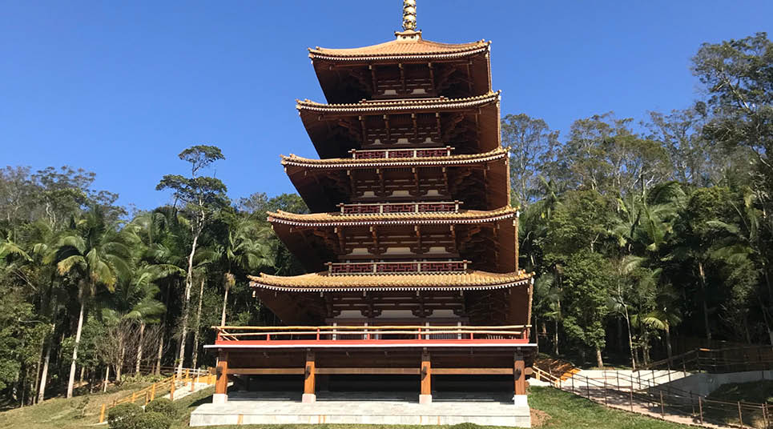
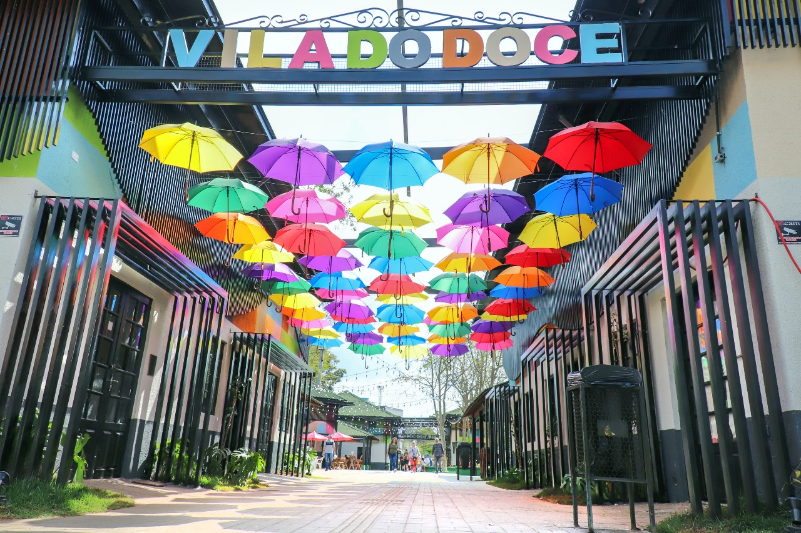
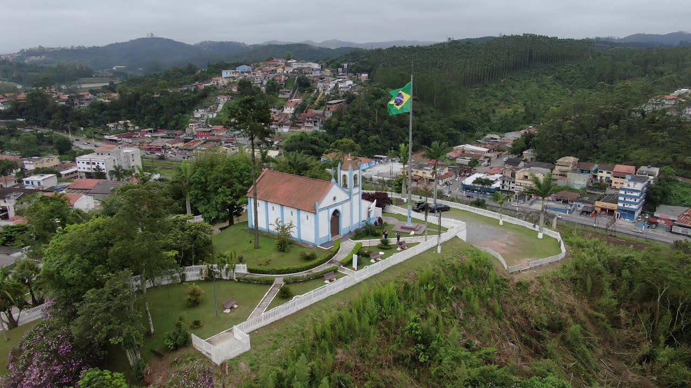
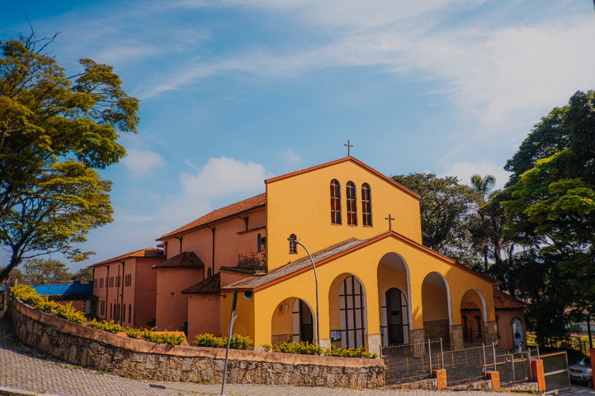
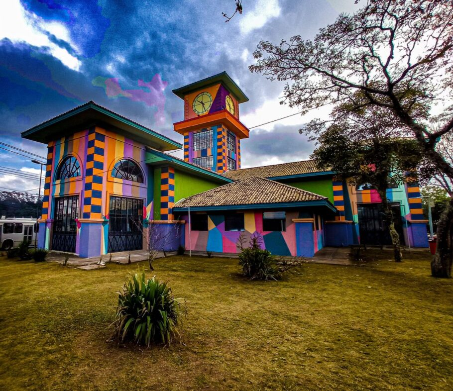

Pontos Turísticos
Descubra os lugares imperdíveis para visitar em Ribeirão Pires!

Vale das Cores
Parque aquático temático e divertido, ótimo para um fim de semana de diversão e sol.

Torre Miroku
A maior torre japonesa de São Paulo, uma experiencia única com gostinho oriental

Vila do doce
Uma vila tão doce quanto o nome, ótimo passa tempo e com uma diversidade de atividades a fazer apenas na vila do doce

Mirante Santo Antonio
Uma vista incrivel da cidade com visão periférica impressionante, e muito legal de explorar

Castelo Robson Miguel
O castelo onde hábita um dos maiores violonistas do Brasil, o renomado Robson Miguel

Pároquia São José
Uma matriz incrível com ótima estrutura, uma agradavel experiencia em um ambiente confortavel

Parque Oriental
Um parque com temática oriental que te leva diretamente ao Japão com uma experiencia única, e apenas em Ribeirão Pires

CHL Centro cultural
O centro cultural de Ribeirão Pires, o lugar onde espalha a cultura e ensinamentos há Ribeirão Pires, e um lugar bem bacana de conhecer